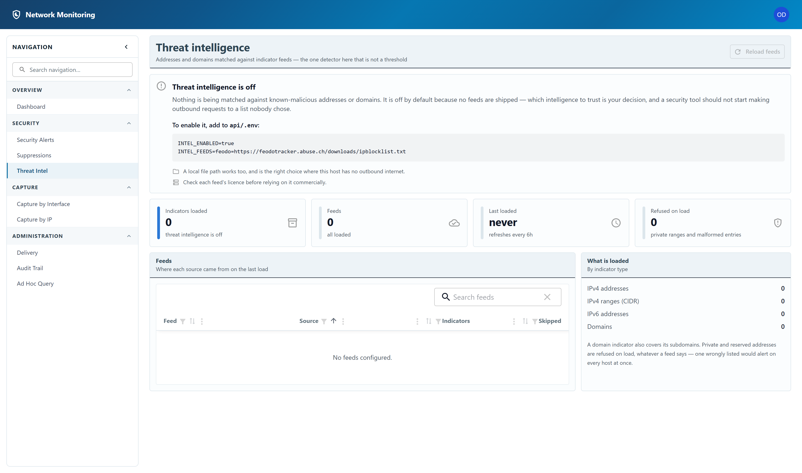

Threat intelligence
Addresses and domains matched against indicator feeds — the one detector here that is not a threshold.

Why it is off
Threat intelligence is off until you turn it on, and no feeds ship with the product. Which intelligence to trust is your decision, and a security tool that started making outbound requests to a list nobody chose would be making it for you.
An administrator switches it on by adding two settings to api/.env on the
server and restarting:
INTEL_ENABLED=true
INTEL_FEEDS=feodo=https://feodotracker.abuse.ch/downloads/ipblocklist.txtA local file path works too, and is the right choice where the machine has no outbound internet access. Check each feed's licence before relying on it commercially.
Reading the page
- Indicators loaded — how many addresses and domains are being matched against right now.
- Feeds and Last loaded — where they came from, and when. Feeds refresh every six hours.
- Refused on load — entries the application declined to load. Private and reserved ranges are refused whatever a feed says: one wrongly listed private range would alert on every host at once.
- What is loaded breaks the total down by indicator type. A domain indicator also covers its subdomains.
Reload feeds fetches every feed again immediately, rather than waiting for the next refresh.
Any signed-in account can see which feeds are loaded and how many indicators they hold. Reload feeds is restricted to administrators, because it causes outbound requests. Switching the feature on at all requires access to the server's configuration file, not just an administrator account.